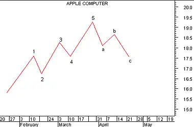
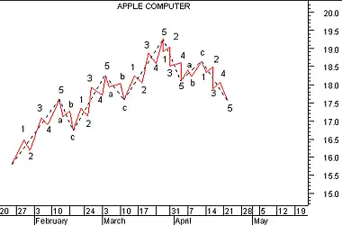

The Elliott Wave Theory is named after Ralph Nelson Elliott. Inspired by the Dow Theory and by observations found throughout nature, Elliott concluded that the movement of the stock market could be predicted by observing and identifying a repetitive pattern of waves. In fact, Elliott believed that all of man's activities, not just the stock market, were influenced by these identifiable series of waves.
With the help of C. J. Collins, Elliott's ideas received the attention of Wall Street in a series of articles published in Financial World magazine in 1939. During the 1950s and 1960s (after Elliott's passing), his work was advanced by Hamilton Bolton. In 1960, Bolton wrote Elliott Wave Principle--A Critical Appraisal. This was the first significant work since Elliott's passing. In 1978, Robert Prechter and A. J. Frost collaborated to write the book Elliott Wave Principle.
The underlying forces behind the Elliott Wave Theory are of building up and tearing down. The basic concepts of the Elliott Wave Theory are listed below.
The basic pattern is made up of eight waves (five up and three down) which are labeled 1, 2, 3, 4, 5, a, b, and c on the following chart.
Waves 1, 3, and 5 are called impulse waves. Waves 2 and 4 are called corrective waves. Waves a, b, and c correct the main trend made by waves 1 through 5.
The main trend is established by waves 1 through 5 and can be either up or down. Waves a, b, and c always move in the opposite direction of waves 1 through 5.
Elliott Wave Theory holds that each wave within a wave count contains a complete 5-3 wave count of a smaller cycle. The longest wave count is called the Grand Supercycle. Grand Supercycle waves are comprised of Supercycles, and Supercycles are comprised of Cycles. This process continues into Primary, Intermediate, Minute, Minuette, and Sub-minuette waves.
The following chart shows how 5-3 waves are comprised of smaller cycles.
 This chart contains the identical pattern shown in the preceding chart (now displayed using dotted lines), but the smaller cycles are also displayed. For example, you can see that impulse wave labeled 1 in the preceding chart is comprised of five smaller waves.Fibonacci numbers provide the mathematical foundation for the Elliott Wave Theory. Briefly, the Fibonacci number sequence is made by simply starting at 1 and adding the previous number to arrive at the new number (i.e., 0+1=1, 1+1=2, 2+1=3, 3+2=5, 5+3=8, 8+5=13, etc). Each of the cycles that Elliott defined are comprised of a total wave count that falls within the Fibonacci number sequence. For example, the preceding chart shows two Primary waves (an impulse wave and a corrective wave), eight intermediate waves (the 5-3 sequence shown in the first chart), and 34 minute waves (as labeled). The numbers 2, 8, and 34 fall within the Fibonacci numbering sequence.
Elliott Wave practitioners use their determination of the wave count in combination with the Fibonacci numbers to predict the time span and magnitude of future market moves ranging from minutes and hours to years and decades.
There is general agreement among Elliott Wave practitioners that the most recent Grand Supercycle began in 1932 and that the final fifth wave of this cycle began at the market bottom in 1982. However, there has been much disparity since 1982. Many heralded the arrival of the October 1987 crash as the end of the cycle. The strong recovery that has since followed has caused them to reevaluate their wave counts. Herein, lies the weakness of the Elliott Wave Theory--its predictive value is dependent on an accurate wave count. Determining where one wave starts and another wave ends can be extremely subjective.